Information About Me and Documentations,
Information About Me
Information About Me
I am a security researcher, In my spare time I love swimming, playing the games, coding script for games, and cinematography.
My interest shifted to UI design and web design and more with Unix system. I was around 16 when I first started getting into security, but I have been bug bounty hunting for roughly two and a half years.
Learning and meeting people is actually what appeals to me the most. That being said, the money is important, because I have to make ends meet.
Purpose is : Rewarding friendly hackers who contribute to a more secure internet
GitHub and Twitter
GitHub is a development platform inspired by the way you work. From open source to business, you can host and review code, manage projects, and build software alongside millions of other developers.
GitHub:
- My GiyHub : phineasphreak
- Offensive Security : offsec
- Parrot Security : parrotsec
- Hak5 : hak5
Twitter:
- Kali Linux
- Offensive Security
- zdi
- Exploit Database
- Parrot Security
- HackerOne
- Bounty Factory
- CVE List
- Korben
The Internet Bug Bounty would also like to thank past panel members for their contributions to the program:
- Matt Miller, Microsoft
- Jason Shirk, Microsoft
Panelists represent their own opinions and not their employers.
Sites and Documentations
Interesting sites with many things to learn, and many documentation for Tools, software, open source, so on.
Also download Linux distribution for pentest (Kali Linux, ParrotSec)
Sites:
- HackerOne
- ZeroDayInitiative
- BugCrowd
- Bounty Foctory
- CVE - Mitre.org
- Offensive Security
- Exploit-DB
- Kali Linux - Distribution
- ParrotSec - Distribution
- BlackArch - Distribution
- EdOverFlow
- Hacker101
- Crypto101
- Do What the Fuck You Want to Public License
Documentation:
- Kali Linux - Training
- Kali Linux - Metasploit-Unleashed
- Awesome GitHub : Awesome-Security | Awesome-Pentest
- Kali Linux - Book Revealed
- ArchLinux - Wiki EN : English | French
- Debian - Wiki
- GitHub Downloads many doc in PDF | Download Zip
Unix System - Others
Unix (trademarked as UNIX) is a family of multitasking, multiuser computer operating systems.
-
Wiki Linux Kernel
The Linux Kernel ArchivesLinus Torvalds say :
“In personal conversations with technical people, I call myself a hacker. But when I’m talking to journalists I just say “programmer” or something like that.”
— Linus TorvaldsLinux Torvalds - Quotes
How Linux Is Built From | The Linux Foundation